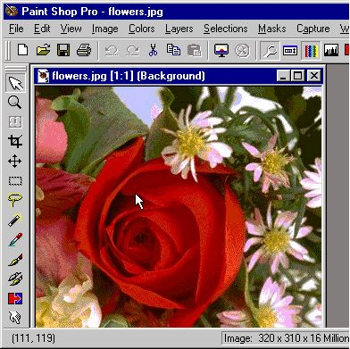

الدرس الثالث عشر
الخرائط الصورية
[الأساسيات]
[الألوان]
[الخطوط]
[الفقرات والقوائم]
[الصور والرسومات]
[الوصلات التشعبية]
[الجداول1]
[الجداول2]
[الإطارات1]
[الإطارات2]
[الإطارات3]
[وسوم من هنا وهناك]
[الخرائط الصورية]
[النماذج1]
[النماذج2]
[الوسوم الخاصة]
[الويب واللغة العربية]
[وسوم Meta]
أهلاً وسهلاً بك إلى الدرس الثالث عشر من دروس HTML. مع بداية هذا الدرس تكون قد قطعت شوطاً طويلاً مع هذه اللغة، وأصبحت قادراً على إنشاء صفحات الويب بصورة فعالة. وسيخصص هذا الدرس لمناقشة واحداً من المواضيع المتقدمة نوعاً ما والممتعة (برأيي المتواضع) في لغة HTML ألا وهو موضوع الخرائط الصورية.
أنت تعرف بلا شك من خلال دراستك للوصلات التشعبية، أننا نستطيع إدراج أي صورة نريدها لتمثل وصلة تشعبية ما. لكن ما رأيك بصورة واحدة تحتوي على العديد من هذه الوصلات التي تقوم بإيصالنا إلى مواقع مختلفة!!؟ هذا هو ببساطة مبدأ الخرائط الصورية. من المحتمل أن تكون لا تعرفها وأن يكون هذا الموضوع جديداً عليك، لكن من المؤكد أنك استخدمتها من قبل. والحقيقة أن هذا الموقع يحتوي على خريطة صورية، فهل تعرف أين هي؟ (ليست هذه فزورة رمضانية، وبالتالي لا تفرح كثيراً إذا عرفتها لأنك في النهاية لن تربح أي جائزة مني).
حسناً هذه الخريطة هي بكل بساطة الصورة الموجودة في أعلى كل صفحة من صفحات هذا الموقع.
حاول النقر على هذه الصور وستلاحظ أنها لا تعمل، أي لا تقوم بنقلك إلى الصفحة المطلوبة لأنها في حالتها هذه مجرد صور عادية ولم نقم حتى الآن بإضافة تلك الوسوم السحرية التي تحولها إلى خرائط صورية نابضة بالحياة .. والتشعب.
إذن، إضافةً إلى الوسوم الجديدة الخاصة بالخرائط والتي سنتعرف عليها من خلال هذا الموضوع سوف نعود أيضاً للتعامل مع وسوم الصور (بما أننا نتحدث عن خرائط صورية) كذلك سنتعامل مع الوصلات التشعبية (كون الخرائط الصورية هي تطبيق آخر للوصلات).. وستحتاج أيضاً إلى القليل من الهندسة (نعم .. الهندسة. ذلك العلم الذي يجبرك المعلم فيه على حمل البيكار لترسم به دائرة.. فتكون النتيجة شكلاً عجائبياً قد يكون أي شيء .. إلا أن يكون دائرة). وأخيراً نحتاج إلى أحد برامج تحرير الصور مثل Paint Shop Pro لمساعدتنا في معرفة بعض التفاصيل الخاصة بالصور.
هل أنت مستعد؟ لننطلق إذن.
هذه هي خريطتنا أو بالأحرى ما سوف تصبح بعد قليل خريطتنا .. مجرد صورة عادية سنقوم بإدراجها في الصفحة.
وهذه هي الشيفرة الخاصة بإدراجها
<IMG SRC="flowers.jpg" WIDTH="320" HEIGHT="310" BORDER="0">
والآن سوف نضيف لهذه الشيفرة خاصية جديدة من خصائص الوسم <IMG> هي USEMAP="#map_name" والتي تخبر المتصفح أن يستخدم هذه الصورة كخريطة وذلك حسب التحديدات الموجودة في تعريف هذه الخريطة (وسنتحدث عن هذه التحديدات لاحقاً إن شاء الله). أما القيمة map_name فهي تمثل الاسم الذي نريد أن نعيّنه للخريطة (أي اسم نريده). وكما ترى فإن هذا الاسم مسبوق بإشارة #.
ما رأيك أن نسمي الخريطة باسم ourmap. عندها سوف تصبح الشيفرة كما يلي:
<IMG SRC="flowers.jpg" WIDTH="320" HEIGHT="310" BORDER="0" USEMAP="#ourmap">
وكانت هذه هي الخطوة الأولى في تعريف الخريطة. والخطوة الثانية هي تحديد التفاصيل.
لنقم بإخبار المتصفح أننا نريد خريطة تحمل الإسم ourmap
<MAP NAME="ourmap">
...
</MAP>ولاحظ أننا لا نستخدم إشارة # مع التسمية هنا
بعد ذلك نحتاج أن نحدد المناطق الساخنة للوصلات التشعبية، ولنفترض أننا نريدها بالشكل التالي:
وهنا أريد أن أؤكد عليك وبصورة مشددة أن رسم هذه الأشكال الهندسية هو فقط بغرض توضيح مبدأ المناطق الساخنة لك، وتحديد شكل وموقع كل منطقة. ولا نحتاج لها أبداً عندما نريد إنشاء خريطة صورية كذلك فقد قمت باختيارها ورسمها بصورة عشوائية، بمعنى أنك تستطيع إختيار أي مناطق أخرى مغايرة كما تستطيع إختيار أي أشكال تريدها. وذلك بالطبع وفقاً لرغبتك كمصمم صفحات ويب.
والسؤال الآن هو، كيف نحدد هذه المناطق باستخدام HTML وكيف يمكن للمتصفح أن يميزها دون غيرها؟ والجواب هو استخدام الوسم <AREA> والذي يدرج ضمن الوسم السابق وبنفس عدد المناطق الساخنة التي نريدها.
<MAP NAME="ourmap">
<AREA>
<AREA>
<AREA>
<AREA>
</MAP>
ومع ذلك فهذا ليس كل شيء لأننا نحتاج أولاً لتحديد شكل كل منطقة ونستخدم لهذا الغرض الخاصية SHAPE ومن ثم نحتاج لتحديد موقع كل منطقة وهذا يتم بالخاصية COORDS وأخيراً بما أن كل منطقة تمثل وصلة تشعبية وتشير إلى عنوان موقع ما فمن البديهي أن نستخدم خاصية تحديد المواقع وهي HREF والتي مرت معنا في الدرس السادس
إلى التفاصيل...
تأخذ الخاصية SHAPE ثلاثة قيم لتحديد شكل المنطقة الساخنة وهي:
RECT
للأشكال المربعة والمستطيلة المنتظمةCIRCLE
للدوائرPOLY
للأشكال العشوائية والمضلعةولدينا دائرة ومستطيل وشكلين عشوائيين، إذن تصبح الشيفرة كما يلي (دون أهمية لترتيبها):
<MAP NAME="ourmap">
<AREA SHAPE="poly">
<AREA SHAPE="rect">
<AREA SHAPE="circle">
<AREA SHAPE="poly">
</MAP>
نأتي الآن إلى تحديد موقع كل شكل من الخريطة، والذي يتم باستخدام الخاصية COORDS. تأخذ هذه الخاصية قيماً رقمية تمثل إحداثيات الشكل الهندسي بالبيكسل على الخريطة (ألم أقل لك أنك ستحتاج إلى القليل من الهندسة) ومن البديهي أن تختلف دلالة كل قيمة بإختلاف الشكل المقصود. أنظر إلى الأشكال التوضيحية التالية:
في الشكل الرباعي المنتظم نحتاج لمعرفة إحداثيي الزاوية اليسرى العليا وإحداثيي الزاوية اليمنى السفلى. (أربعة أرقام)
أما في الدائرة فكل ما نحتاجه هو إحداثيي نقطة المركز لهذه الدائرة بالإضافة إلى معرفة نصف قطرها. (ثلاثة أرقام فقط)
وأخيراً في الأشكال المضلعة العشوائية نحتاج لمعرفة إحداثيي كل نقطة من النقاط التي تمثل زوايا هذا الشكل مهما كان عددها. (عدد الأرقام غير محدد ويختلف بإختلاف الشكل المقصود)
وقد تسأل الآن، كيف نستطيع إيجاد هذه الإحداثيات؟ ما من مشكلة! هنا يأتي دور برنامج الجرافيكس، فكل ما عليك هو تحميل الصور في هذا البرنامج ثم وضع المؤشر في المكان المطلوب وسوف تشاهد إحداثيات النقطة التي يقع عليها المؤشر على الشريط الموجود أسفل نافذة البرنامج. وبالإضافة لذلك تستطيع معرفة أبعاد الصورة ككل. وعلى أية حال كل ما عليك فعله هو تسجيل إحداثيات جميع النقاط المطلوبة من أجل استخدامها في تعريف الخريطة.
 ولنعد الآن إلى خريطتنا:
بالنسبة للشكل المستطيل كانت إحداثيات النقطة العليا هي:(28,255) وإحداثيات النقطة السفلى هي (310,300).أما الدائرة فكانت إحداثيات نقطة مركزها هي (140,160) ونصف قطرها 175 بيكسل.
أما الشكل المضلع الأيمن (المثلث) فأن إحداثيات زواياه هي (150,10), (300,20), (315,230) وتذكر هنا أن لا أهمية للترتيب في ذكر هذه النقاط. المهم فقط أن تكون الإحداثيات دقيقة إلى حد ما.
وأخيراً فإن إحداثيات النقاط في الشكل المضلع الأيسر (الرباعي) هي: (10,10), (130,10), (110,65), (10,140)
لنقم الآن بكتابة هذه البيانات ضمن الشيفرة السابقة والتي ستصبح كما يلي:
<MAP NAME="ourmap">
<AREA SHAPE="poly" COORDS="10,10,130,10,110,65,10,140">
<AREA SHAPE="rect" COORDS="28,255,310,300">
<AREA SHAPE="circle" COORDS="140,160,175">
<AREA SHAPE="poly" COORDS="150,10,300,20,315,230">
</MAP>
ماذا بقي الآن؟ بقي تعيين العناوين التي ستشير إليها الوصلات التشعبية والتي سنستخدم لها الخاصية HREF. إليك عناوين أربعة من المواقع العربية الممتازة
<MAP NAME="ourmap">
<AREA SHAPE="poly" COORDS="10,10,130,10,110,65,10,140"
HREF="http://www.sakhr.com">
<AREA SHAPE="rect" COORDS="28,255,310,300"
HREF="http://www.ayna.com">
<AREA SHAPE="circle" COORDS="140,160,175"
HREF="http://www.pcmag-arabic.com">
<AREA SHAPE="poly" COORDS="150,10,300,20,315,230"
HREF="http://www.asp.com.lb">
</MAP>
وأخيراً بعد تجميع الشيفرة الخاصة بإدراج الصورة مع هذه الشيفرة بالشكل التالي. (وبالمناسبة فقد قمت بالتجميع من أجل توضيح النتيجة النهائية لشيفرة الخريطة ككل. وفي الواقع أننا نستطيع وضع تعريف الخريطة في أي مكان نريده داخل الملف وليس شرطاً أن يكون قريباً من شيفرة إدراج الصورة)
<IMG SRC="flowers.jpg" WIDTH="320" HEIGHT="310" BORDER="0" USEMAP="#ourmap">
<MAP NAME="ourmap">
<AREA SHAPE="poly" COORDS="10,10,130,10,110,65,10,140"
HREF="http://www.sakhr.com">
<AREA SHAPE="rect" COORDS="28,255,310,300"
HREF="http://www.ayna.com">
<AREA SHAPE="circle" COORDS="140,160,175"
HREF="http://www.pcmag-arabic.com">
<AREA SHAPE="poly" COORDS="150,10,300,20,315,230"
HREF="http://www.asp.com.lb">
</MAP>
سوف نحصل على النتيجة التالية وحاول أن تجربها:

والآن أريد أن أثير مسألتين مهمتين في هذا السياق:
الأولى: ماذا لو أردنا إدراج هذه الخريطة أكثر من مرة في الصفحة، فهل نحتاج إلى تكرار كتابة الشيفرة <MAP> ... </MAP> مع كل مرة ندرج فيها الصورة؟ الجواب قطعاً لا.!!
فطالما أننا نكتب الخاصية USEMAP فإن المتصفح يقوم بالبحث عن شيفرة الخريطة التي حددنا اسمها مع هذه الخاصية، ومن ثم يطبقها على الصورة المعطاة مهما كان عدد مرات إدراجها.الثانية: ماذا لو قررنا إلغاء هذه الصورة ووضع صورة أخرى مكانها. هل من مشكلة؟ أيضاً لا يوجد هنا أي مشكلة. لأن تعريف الخريطة بطبيعته غير مرتبط بصورة محددة بعينها. هو فقط يعرف مناطق محددة بالشكل والموقع. ولو دققت النظر في هذا التعريف فلن تجد ما يشير إلى أنها مرتبطة بصورة بعينها، أليس كذلك؟ بل إنك لو أدرجت صورة أكبر مما يجب أو حتى صورة أصغر مما يجب واستخدمت خاصية USEMAP معهما لتشير إلى الخريطة، فلن تواجه أي مشكلة في ذلك. (وأعني هنا مشكلة للمتصفح) لكن بالطبع فالصورة الكبيرة ستحتوي على مناطق دون وصلات تشعبية، والصورة الصغيرة سوف لن تحتوي على بعض الوصلات المعرفة في الخريطة
والخلاصة أن تعريف الخريطة هو تعريف مشاع يوضع مرة واحدة فقط وفي أي مكان داخل الصفحة، وبشرط أن يكون ضمن <BODY> ... </BODY> وبالمقابل نستطيع إدراج عشرات الصور مهما كانت طبيعتها داخل الصفحة لتكون خرائط صورية تستخدم نفس تعريف هذه الخريطة طالما أننا وضعنا الخاصية USEMAP="#map_name" مع هذه الصور.
ومسك الختام: تحفل الإنترنت بالكثير من البرامج التي تقوم بتصميم الخرائط الصورية بسرعة وسهولة متناهيتين.. فقط تقوم بتحميل الصورة المطلوبة، ثم ترسم الأشكال التي تريدها عليها كما لو كنت تستخدم برنامج الرسام، ومن ثم تكتب عناوين الوصلات التشعبية المطلوبة لكل من هذه الأشكال. وهكذا ببساطة يقوم البرنامج بإيجاد الإحداثيات الخاصة بكل شكل وإنشاء شيفرة الخريطة المطلوبة!! أي أنك خلال دقائق معدودة تستطيع إنشاء أعقد الخرائط الصورية.. لكن بما أنك تهوى الصعب وتتحدى المستحيل فلا اعتقد أنك ستفضل هذا النوع من البرامج. (بالمناسبة، لقد فضلت تأخير كتابة هذه الملاحظة حتى نهاية هذا الدرس، لأني لو وضعتها في البداية لما أكملت هذا الدرس أصلاً ولهرعت للإنترنت للبحث عن مثل هذه البرامج) وعلى أية إليك هذا العنوان لبرنامج رائع يدعى Live Image من شركة Mediatec
أتمنى لك خرائطاً سعيدة دائماً.. وألقاك في الدرس التالي

| إتش.بي بالعربية © 1998-1999 يحيى الشريف |
H.P in arabic © 1998-1999 Yahya Al-Sharif |